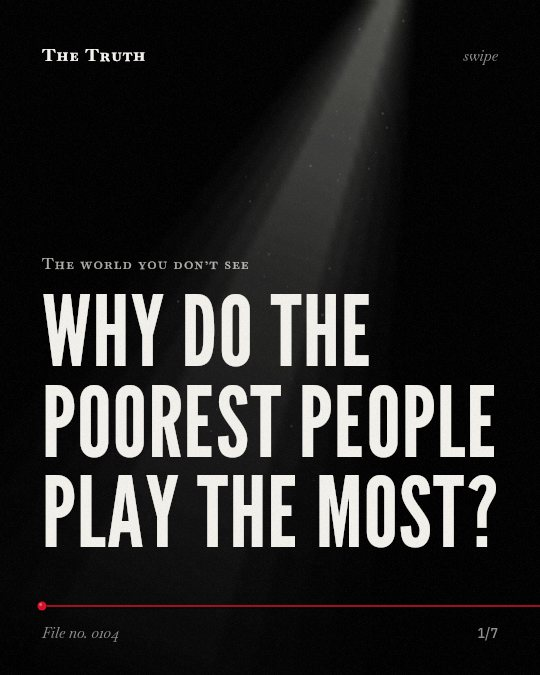

The world you don’t see
Why do the poorest people play the most?

Low income fuels the highest lottery participation.
People with the least money play the most. They pay a regressive tax on games that cost them more relative to their income.
Supported. At least one solid peer-reviewed study. The evidence backs this.
What the research found
Higher-priced instant games are less regressive than lower-priced games.
“the empirical results show that higher-priced instant games are less regressive than lower-priced games.”
Study, 2012. Garrett, Public Finance Review.
Counties having a higher-percentage of low-income households have higher sales of lower-priced instant games, but differences in the distribution of household income have no significant impact on higher-priced instant sales.
“counties having a higher-percentage of low-income households have higher sales of lower-priced instant games, but differences in the distribution of household income have no significant impact on higher-priced instant sales.”
Study, 2012. Garrett, Public Finance Review.
Priming low-income participants to perceive their own income as low relative to an implicit standard causes them to be more likely to purchase lottery tickets.
“participants were more likely to purchase lottery tickets when they were primed to perceive that their own income was low relative to an implicit standard.”
Experiment, 2008. Haisley et al., Journal of Behavioral Decision Making.
The taxes on all lottery games are regressive, with instant games having the greatest regressivity.
“The authors find that the taxes on all lottery games are regressive, with instant games having the greatest regressivity”
Study, 1998. Stranahan & Borg, Public Finance Review.
State lotteries are extremely popular among the poor, who play the most but can least afford to play.
“state lotteries are extremely popular, especially among the poor, who play the most but can least afford to play.”
Experiment, 2008. Haisley et al., Journal of Behavioral Decision Making.
Lottery expenditures are linked to income, location of the household, gender, age, education, social class and whether the household has positive betting expenditures.
“Lottery expenditures are affected by income, location of the household, gender, age, education, social class and whether the household has positive betting expenditures.”
Observational study, 2012. Crowley et al., Cork Open Research Archive (University College Cork, Ireland).
Price points change the tax burden.
Lower-priced games are more regressive. Higher-priced games show less variance in sales based on household income levels.
Income perception shapes your choices.
That may be why you buy a ticket. When you perceive your income as low relative to an implicit standard, you are more likely to purchase.
This part is our reading of the evidence, not a finding.
The corner store at dusk.
You stand under a flickering light. You hold a few coins. You pick up a small ticket to see if your life changes tonight.
The honest summary
The evidence consistently shows that lower-income individuals participate more in lotteries and face a regressive tax burden, though higher-priced games may be less regressive.
One study notes that the relationship between lottery sales and poverty is an association and does not prove causation.
What are you looking for in that ticket?
Sources
- Emily Celia Haisley, Romel Mostafa, George F. Loewenstein (2008). Subjective relative income and lottery ticket purchases. Journal of Behavioral Decision Making. Experiment, cited 192 times.
- Frank Crowley, John Eakins, Declan Jordan (2012). Participation, Expenditure and Regressivity in the Irish Lottery: Evidence from Irish Household Budget Survey 2004/2005. Cork Open Research Archive (University College Cork, Ireland). Observational study, cited 14 times.
- Harriet A. Stranahan, Mary O. Borg (1998). Separating the Decisions of Lottery Expenditures and Participation: a Truncated Tobit Approach. Public Finance Review. Study, cited 49 times.
- Thomas A. Garrett (2012). The Distributional Burden of Instant Lottery Ticket Expenditures. Public Finance Review. Study, cited 4 times.
Also read for this file, not quoted
This file was researched and drafted by software, then checked by rules a model cannot talk its way around: each quote above was matched word for word against the paper, and every number had to appear in it. How files are made.